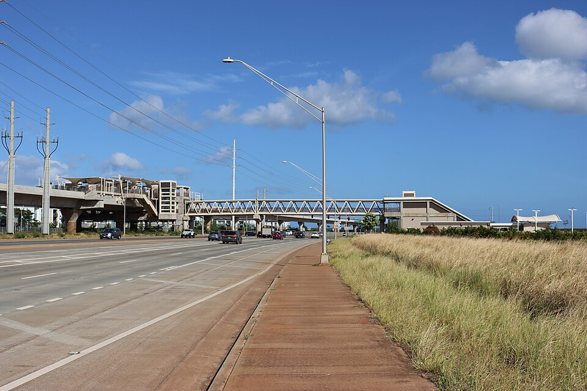

Keoneʻae Rail Station
Place: Keoneʻae Rail Station, University of Hawaiʻi–West Oʻahu, East Kapolei, Oʻahu
Type: Skyline rail station / university station
Namesake: Keoneʻae (“fine, soft, powdery sand”), a traditional name recalling the dry, windswept landscape of the ʻEwa plain
Story it tells: How a dry landscape of fine sand, dust, and limited water was transformed by artesian wells and plantation sugar before becoming part of modern Kapolei and the University of Hawaiʻi–West Oʻahu.

Keoneʻae Rail Station, also known as University of Hawaiʻi–West Oʻahu Station, stands above Kualakaʻi Parkway near the university's campus in East Kapolei. The elevated station opened on June 30, 2023, as part of Skyline's first operating segment. Today, it is surrounded by a rapidly developing landscape of housing and new infrastructure. Its name recalls the dramatically different environment that existed across the ʻEwa plain.
Keoneʻae is interpreted as “fine, soft, powdery sand.” The name describes the dry and windswept character of this part of Oʻahu, where fine sand, dust, and loose soil could blow across the open plain.
The surrounding region was associated with the Plain of Kaupeʻa, a broad and often harsh expanse crossed by trails connecting communities around Puʻuloa (Pearl Harbor) with the Waiʻanae coast. Despite the limited rainfall, Native Hawaiians made use of the environment. A farming community known as Keoneʻae existed near what is now the intersection of Farrington Highway and Kaloʻi Gulch, where localized water sources supported cultivation. Drought-tolerant crops such as ʻuala could also be cultivated in natural depressions of the limestone where moisture accumulated.
Kaupeʻa also occupied a place in Hawaiian spiritual traditions. The plain was associated with ao kuewa, wandering or friendless spirits without ʻaumākua or family guardians to guide them.
The geology beneath Keoneʻae was unique as well. Much of the ʻEwa plain rests upon ancient limestone and coral formations containing natural depressions, cavities, and sinkholes. Above this foundation lay fertile soils, but without dependable surface water, the dry plain could not support agriculture on the scale that would later change the area.
That limitation changed dramatically in the late nineteenth century. In 1877, businessman James Campbell purchased about 41,000 acres of Honouliuli land. Campbell believed that the enormous rainfall absorbed by Oʻahu's mountains must be collecting underground, even though the ʻEwa plain itself appeared dry and barren. He believed he could access it and feed this tract of land.
In 1879, Campbell hired well driller James Ashley to test his theory. After drilling hundreds of feet beneath the plain, the crew struck pressurized freshwater. The artesian well demonstrated that an enormous groundwater resource existed beneath the barren plains above.
The discovery helped transform ʻEwa. Artesian wells were drilled and groundwater was brought to the surface and irrigated land previously considered too dry for farming. Sugar companies eventually cultivated enormous fields across the plain, turning a landscape defined by blowing dust and powdery sand into one of Oʻahu's major sugar-producing regions. For much of the twentieth century, cane fields became the dominant landscape of the area around what is now East Kapolei.
Sugar would not last. The Campbell Estate had already envisioned an urban center on the ʻEwa plain, part of a long-term effort to create what became Kapolei, Oʻahu's planned “Second City.” Former agricultural lands gradually gave way to roads, housing, government buildings, businesses, schools, and other development.
The University of Hawaiʻi–West Oʻahu became one of the institutions anchoring that new landscape, opening in 2012. Residential development followed nearby, including the growing Hoʻopili community.
Building an elevated railway across the ancient limestone plain presented challenges that echoed the area's geology. Engineers encountered cavities and unstable sections beneath the surface, while sinkholes appeared near portions of the rail corridor during construction. Modern foundations had to account for the same porous limestone landscape that had shaped how people used these lands centuries earlier.
As the rail construction slowly moved across the plain and into the tributaries of Puʻuloa, the Hawaiian Station Naming Working Group researched traditional names associated with this place. The group recommended Keoneʻae, reconnecting the station with the environmental character of the older ʻEwa landscape. University of Hawaiʻi–West Oʻahu remains as a secondary name that identifies the station's modern destination.